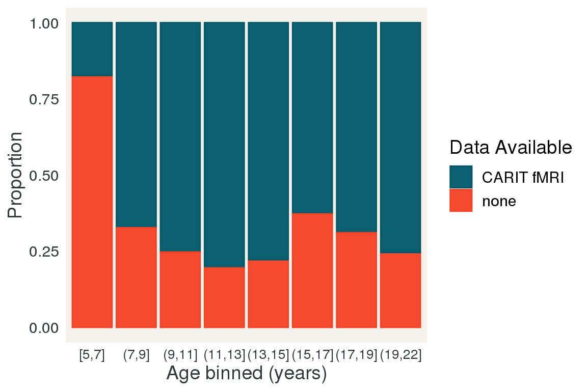
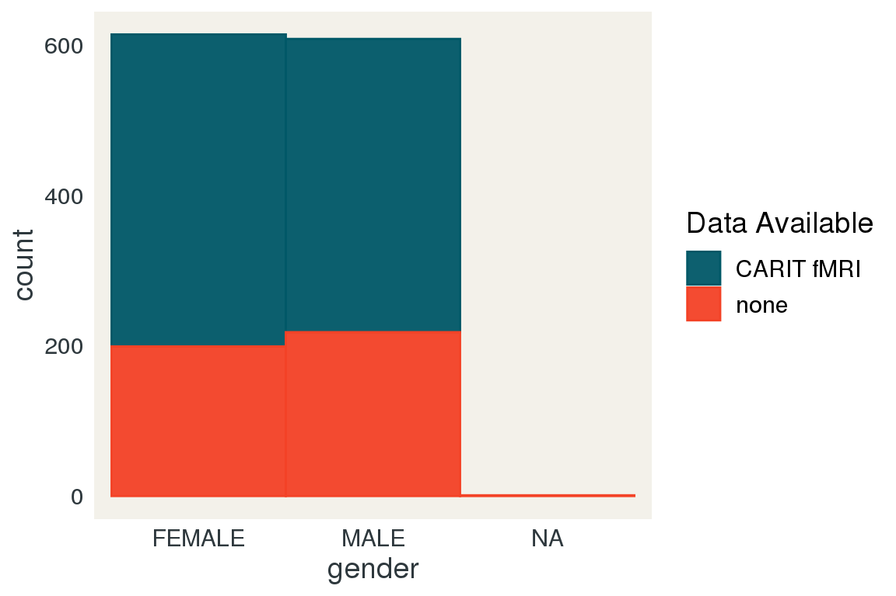
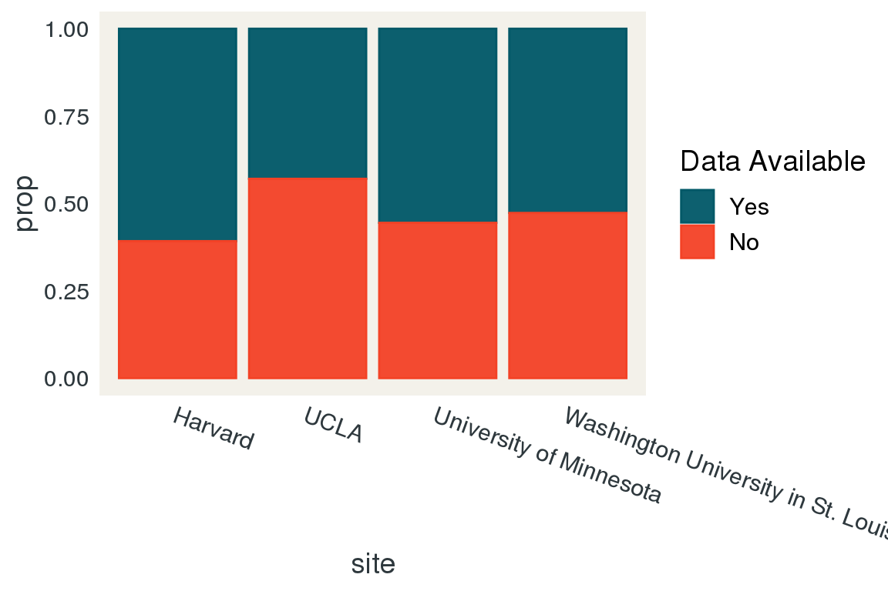
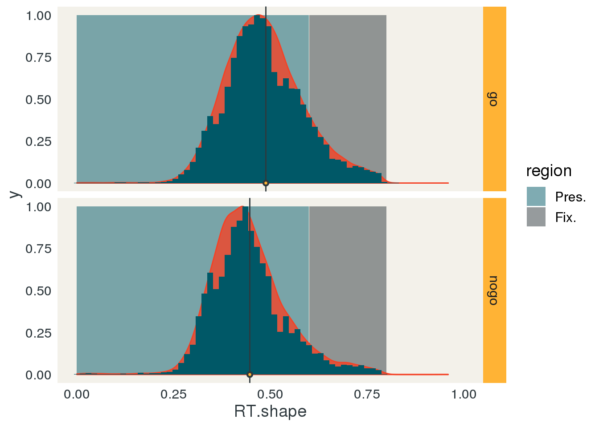
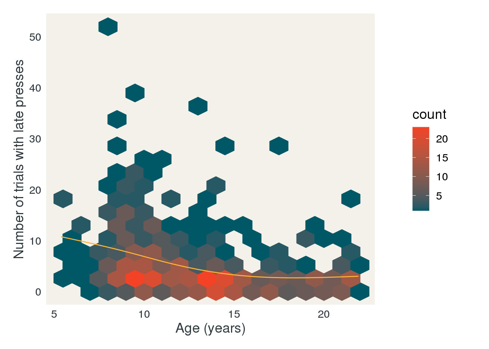
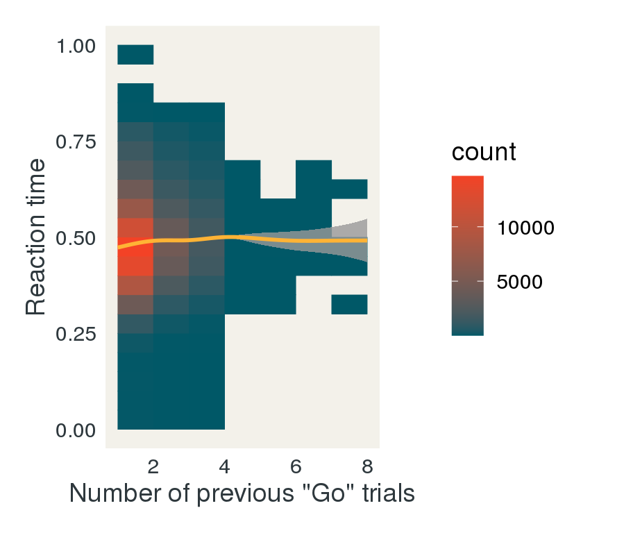

CARIT Report
John Flournoy
2020-11-02
Process data
library(data.table)
library(psycho)
data.table::setDTthreads(4)
modal <- function(x){
t <- table(unlist(x))
n <- dimnames(t)[[1]]
return(n[which(t == max(t))])
}
data_path <- '/ncf/hcp/data/CCF_HCD_STG_PsychoPy_files/'
#List all of the CARIT task files in the data directory
fnames <- dir(data_path,
pattern = "*CARIT.*wide.csv",
recursive = TRUE,
full.names = TRUE)
names(fnames) <- 1:length(fnames)
#Set the column names we want from each csv file
col_select <- c('condFile', 'trialNum', 'stim',
'corrAns', 'prepotency', 'ISI',
'shapeStartTime', 'shapeEndTime',
'fixStartTime','fixEndTime',
'nogoCondition','resp',
'trialResp.firstKey', 'trialResp.firstRt',
'corrRespMsg', 'corrRespCode',
'corrRespTrialType','isiPress.keys',
'isiPress.rt', 'hitCount', 'missCount',
'falseAlarmCount', 'corrRejectCount',
'totalAcc', 'goAcc', 'nogoAcc',
'goFiveBackAvg', 'nogoFiveBackAvg',
'totalFiveBackAvg')
#create a temporary data frame of all the data from all the csv files
adf <- data.table::rbindlist(
lapply(fnames, function(f){
#remove the first 4 rows of each data frame.
data.table::fread(f, select = col_select)[-(1:4),]
}),
idcol = TRUE)
#combine information about the files with the temporary data frame.
d <- data.table(.id = names(fnames),
filename = fnames,
sessionID = gsub('.*(HCD[A-Za-z0-9]+_V1_[A|B|X]).*', '\\1', fnames),
sID = gsub('.*(HCD[A-Za-z0-9]+)_V1_[A|B|X].*', '\\1', fnames))[adf, on = '.id']
readr::write_csv(d, 'CARIT_allRaw.csv')
demos <- data.table::fread('HCPD_COMBINED20200608.csv',
select = c('id', 'age', 'gender', 'site', 'RACE', 'SES_PLVL', 'SES_RLVL', 'income'))
staged <- data.table::fread('ccf_hcd_stg_2020-06-09.csv',
select = 'Subject')
public_release <- data.table::fread('HCD_V1_Release_Struct+fMRI_Merged_Adj.txt', header = FALSE, col.names = 'sID')
long <- data.table::fread('HCPD_LONGITUDINAL20200608.csv',
select = c('id', 'LONG_AGE'))
staged_dlmri <- data.table(sessionID = dir('/ncf/hcp/data/intradb_multiprocfix/', pattern = "HCD.*"))
staged_dlmri[, 'has_task_scan'] <- unlist(lapply(staged_dlmri$sessionID, function(sess){
length(dir(file.path('/ncf/hcp/data/intradb_multiprocfix/',
sess,
'/MultiRunIcaFix_proc/',
sess,
'/MNINonLinear/Results/'), pattern = 'tfMRI.*')) > 0
}))
staged_dlmri[, 'has_carit'] <- unlist(lapply(staged_dlmri$sessionID, function(sess){
length(dir(file.path('/ncf/hcp/data/intradb_multiprocfix/',
sess,
'/MultiRunIcaFix_proc/',
sess,
'/MNINonLinear/Results/'), pattern = 'tfMRI_CARIT.*')) > 0
}))
staged_dlmri[, 'has_guessing'] <- unlist(lapply(staged_dlmri$sessionID, function(sess){
length(dir(file.path('/ncf/hcp/data/intradb_multiprocfix/',
sess,
'/MultiRunIcaFix_proc/',
sess,
'/MNINonLinear/Results/'), pattern = 'tfMRI_GUESSING.*')) > 0
}))
staged_dlmri[, sID := gsub('.*(HCD[A-Za-z0-9]+)_V1_MR.*', '\\1', sessionID)]
setnames(demos, 'id', 'sID')
setnames(staged, 'Subject', 'sID')
setnames(long, 'id', 'sID')
#Some columns should be factors
factor_vars <- c('sessionID',
'stim',
'corrAns',
'prepotency',
'nogoCondition',
'resp',
'trialResp.firstKey',
'corrRespMsg',
'corrRespTrialType')
d[, (factor_vars) := lapply(.SD, as.factor), .SDcols = factor_vars]
#Integrate demographic variables
carit <- demos[d, on = 'sID']
#use the condition file name to figure out the run number
setnames(carit, 'condFile', 'runN')
carit[, runN := as.numeric(gsub('.*/scan([12])\\.csv', '\\1', runN))]
#rename corrAns to trialType
setnames(carit, 'corrAns', 'trialType')
#relabel the nogo condtion to be more accurate
carit[, nogoCondition := factor(nogoCondition,levels=c("prevRewNogo","neutralNogo"),labels=c("prevRewNogo","prevLossNogo"))
]
#relabel the prepotency factor to be more clear
carit[, prepotency := factor(prepotency,levels=c("2","3","4"),labels=c("2go","3go","4go"))]
#aggTrialN is trial number across both runs
carit[, aggTrialN := trialNum + 92*(runN - 1)]
carit[, RT.shape := trialResp.firstRt - shapeStartTime]
carit_by_run_SDT <- dcast(carit[, .N, by = c('sID', 'runN', 'corrRespTrialType') ], ... ~ corrRespTrialType, value.var = 'N', fill = 0)
carit_by_run_SDT[, c('dprime', 'beta', 'aprime', 'bppd', 'c') := psycho::dprime(Hit, falseAlarm, Miss, corReject)]
readr::write_csv(carit,"CARIT_allSubs.csv")
readr::write_csv(carit_by_run_SDT,"CARIT_allSubs_dprime.csv")Data cross-check
Total N with CARIT task behavior: 811.
Number of participants with CARIT task behavior but no demo info: 0.
Number of participants with demo info but no CARIT task behavior: 411.
Number of participants with CARIT task behavior but not staged: 0.
Number of participants staged but no CARIT task behavior: 12. These participants likely did not complete the task, though other data is relevant for staging.
do.call(DT::datatable,
c(list(staged[!d, on = 'sID'],
caption = 'Pariticipants marked as staged, with no CARIT data.'),
dt_options))Number of participants with dl'd MRI but not in staging list: 0.
Number of participants in staging list without any dl'd MRI: 2.
Personal communication with Mike Hodge:
Sometimes when we find issues with the staging sessions after they’re built, we’ll remove the sessions so they’re not inadvertently released. We’ll often not remove the corresponding subject record because we’ll eventually rebuild that session. I’m sure that’s what happened here.
Number of participants with (any) dowloaded task MRI, but no CARIT task behavior: 5.
Number of participants with dowloaded CARIT task MRI, but no CARIT task behavior: 0.
Number of participants with CARIT task behavior, but no dowloaded task MRI (on this task): 4. This indicates that these participants had problems with their data in the multirun ica fix pipeline (it is possible that this session will eventually get rebuilt, it seems).
missing_task_mri <- unique(d[, c('sessionID', 'sID')])[!staged_dlmri[has_task_scan == TRUE], on = 'sID']
do.call(DT::datatable,
c(list(demos[missing_task_mri, on = 'sID'],
caption = 'Participants with CARIT task behavior, but no dowloaded task MRI (on this task).'),
dt_options))Check design
CARIT has two rounds of 92 trials each, for a total of 184 trials per subject.
Modal number of trials: 184.
Number of participants without modal number: 36.
#List participants without the modal number of trials
do.call(DT::datatable,
c(list(d[, list(`N trials` = .N), by = 'sID'][`N trials` != as.numeric(modal(`N trials`))],
caption = 'Pariticipants without modal number of trials.'),
dt_options))Each round of the task has 68 go trials and 24 nogo trials. Each subject should have 136 go and 48 nogo trials
Number of participants with any deviation from this:
dcast(carit[, .N, keyby = c('sID', 'trialType')],
sID ~ trialType)[go != 136 | nogo != 48][, .N]## [1] 36Nogo trials should be equivalently distributed between prev reward and prev loss trials. Each subject should have 24 prevRew, 24 prevLoss.
Number of participants with any deviation from this:
dcast(carit[, .N, keyby = c('sID', 'nogoCondition')],
sID ~ nogoCondition)[prevRewNogo != 24 | prevLossNogo != 24][, .N]## [1] 36Go prepotency trials should number 20 for 2, 16 for 3, and 12 for 4.
Number of participants with any deviation from this:
dcast(carit[, .N, keyby = c('sID', 'prepotency')],
sID ~ prepotency)[`2go` != 20 |
`3go` != 16 |
`4go` != 12][, .N]## [1] 36These are all the same IDs who are missing one of the two runs.
Data availability
N participants with task behavior: 811. N participants with any task fMRI: 814. N participants with CARIT fMRI: 807. N participants with Guessing fMRI: 813.
Age
carit_behavior_ids <- unique(d[, c('sID')])
carit_behavior_ids[, carit_behav := TRUE]
demos_and_data_avail <- merge(carit_behavior_ids, demos, on = 'sID', all = TRUE)
demos_and_data_avail <- merge(demos_and_data_avail, staged_dlmri, on = 'sID', all = TRUE)
avail_type <- function(behav, fmri){
r <- fifelse(fifelse(is.na(fmri), FALSE, fmri) &
fifelse(is.na(behav), FALSE, behav), 'CARIT fMRI', 'none')
return(r)
}
demos_and_data_avail[, `Data Available` := avail_type(carit_behav, has_carit)]
ggplot(demos_and_data_avail, aes(x = age)) +
geom_histogram(aes(group = `Data Available`, fill = `Data Available`, color = `Data Available`, y = ..count..),
position = position_dodge(),
alpha = .95,
binwidth = 1) +
scale_x_continuous(breaks = 1:25) +
scale_fill_manual(aesthetics = c('fill', 'color'), values = apal[c(1,5)]) +
jftheme
Age Prop.
agerange <- range(demos_and_data_avail$age)
breaks <- seq(floor(agerange[[1]]), ceiling(agerange[[2]]), length.out = 10)
values <- breaks[-length(breaks)] + diff(breaks[1:2])/2
demos_and_data_avail_age <- demos_and_data_avail
demos_and_data_avail_age[, age_bin := cut(age, breaks = breaks, labels = values)]
demos_and_data_avail_age_prop <-
demos_and_data_avail_age[, .N,
by = c('age_bin', 'Data Available')][, prop := N / sum(N),
by = 'age_bin']
demos_and_data_avail_age_prop[, age_bin := as.numeric(as.character(age_bin))]
ggplot(demos_and_data_avail_age_prop, aes(x = age_bin)) +
geom_col(aes(group = `Data Available`, fill = `Data Available`, color = `Data Available`, y = prop),
position = position_stack(),
alpha = .95,
binwidth = 1) +
scale_fill_manual(aesthetics = c('fill', 'color'), values = apal[c(1,5)]) +
scale_x_continuous(breaks = round(values, 1)) +
labs(x = 'Age binned (years)', y = 'Proportion') +
jfthemePR Age Prop.
public_release[, `Data Available` := TRUE]
PR_data_avail <- merge(public_release, demos, on = 'sID', all = TRUE)
PR_data_avail[is.na(`Data Available`), `Data Available` := FALSE]
PR_data_avail[, `Data Available` := factor(`Data Available`, levels = c(TRUE, FALSE), labels = c('Yes', 'No'))]
agerange <- range(PR_data_avail$age)
breaks <- seq(floor(agerange[[1]]), ceiling(agerange[[2]]), length.out = 10)
values <- breaks[-length(breaks)] + diff(breaks[1:2])/2
PR_data_avail_age <- PR_data_avail
PR_data_avail_age[, age_bin := cut(age, breaks = breaks, labels = values)]
PR_data_avail_age_prop <-
PR_data_avail_age[, .N,
by = c('age_bin', 'Data Available')][, prop := N / sum(N),
by = 'age_bin']
PR_data_avail_age_prop[, age_bin := as.numeric(as.character(age_bin))]
ggplot(PR_data_avail_age_prop, aes(x = age_bin)) +
geom_col(aes(group = `Data Available`, fill = `Data Available`, color = `Data Available`, y = prop),
position = position_stack(),
alpha = .95,
binwidth = 1) +
scale_fill_manual(aesthetics = c('fill', 'color'), values = apal[c(1,5)]) +
scale_x_continuous(breaks = round(values, 1)) +
labs(x = 'Age binned (years)', y = 'Proportion') +
jfthemeSex
ggplot(demos_and_data_avail, aes(x = gender)) +
geom_bar(aes(group = `Data Available`, fill = `Data Available`, color = `Data Available`, y = ..count..),
position = position_stack(),
width = 1, alpha = .95,
binwidth = 1) +
scale_fill_manual(aesthetics = c('fill', 'color'), values = apal[c(1,5)]) +
jftheme
PR Sex
ggplot(PR_data_avail, aes(x = gender)) +
geom_bar(aes(group = `Data Available`, fill = `Data Available`, color = `Data Available`, y = ..count..),
position = position_stack(),
width = 1, alpha = .95,
binwidth = 1) +
scale_fill_manual(aesthetics = c('fill', 'color'), values = apal[c(1,5)]) +
jfthemeSite
ggplot(demos_and_data_avail, aes(x = site)) +
geom_bar(aes(group = `Data Available`, fill = `Data Available`, color = `Data Available`, y = ..count..),
position = position_stack(),
width = 1, alpha = .95,
binwidth = 1) +
scale_fill_manual(aesthetics = c('fill', 'color'), values = apal[c(1,5)]) +
jftheme +
theme(axis.text.x = element_text(angle = 360-20, hjust = 0))
Site Prop.
demos_and_data_avail_site_prop <-
demos_and_data_avail[, .N,
by = c('site', 'Data Available')][, prop := N / sum(N),
by = 'site']
ggplot(demos_and_data_avail_site_prop, aes(x = site)) +
geom_col(aes(group = `Data Available`, fill = `Data Available`, color = `Data Available`, y = prop),
position = position_stack(),
alpha = .95,
binwidth = 1) +
scale_fill_manual(aesthetics = c('fill', 'color'), values = apal[c(1,5)]) +
jftheme +
theme(axis.text.x = element_text(angle = 360-20, hjust = 0))
PR Site Prop.
PR_data_avail_site_prop <-
PR_data_avail[, .N,
by = c('site', 'Data Available')][, prop := N / sum(N),
by = 'site']
ggplot(PR_data_avail_site_prop, aes(x = site)) +
geom_col(aes(group = `Data Available`, fill = `Data Available`, color = `Data Available`, y = prop),
position = position_stack(),
alpha = .95,
binwidth = 1) +
scale_fill_manual(aesthetics = c('fill', 'color'), values = apal[c(1,5)]) +
jftheme +
theme(axis.text.x = element_text(angle = 360-20, hjust = 0))Race Count
ggplot(demos_and_data_avail, aes(x = RACE)) +
geom_bar(aes(group = `Data Available`, fill = `Data Available`, color = `Data Available`),
position = position_dodge(),
alpha = .95,
binwidth = 1) +
scale_fill_manual(aesthetics = c('fill', 'color'), values = apal[c(1,5)]) +
jftheme +
theme(axis.text.x = element_text(angle = 360-20, hjust = 0))
Race Prop.
demos_and_data_avail_race_prop <-
demos_and_data_avail[, .N,
by = c('RACE', 'Data Available')][, prop := N / sum(N),
by = 'RACE']
ggplot(demos_and_data_avail_race_prop, aes(x = RACE)) +
geom_col(aes(group = `Data Available`, fill = `Data Available`, color = `Data Available`, y = prop),
position = position_stack(),
alpha = .95,
binwidth = 1) +
scale_fill_manual(aesthetics = c('fill', 'color'), values = apal[c(1,5)]) +
jftheme +
theme(axis.text.x = element_text(angle = 360-20, hjust = 0))
PR Race Prop.
PR_data_avail_race_prop <-
PR_data_avail[, .N,
by = c('RACE', 'Data Available')][, prop := N / sum(N),
by = 'RACE']
ggplot(PR_data_avail_race_prop, aes(x = RACE)) +
geom_col(aes(group = `Data Available`, fill = `Data Available`, color = `Data Available`, y = prop),
position = position_stack(),
alpha = .95,
binwidth = 1) +
scale_fill_manual(aesthetics = c('fill', 'color'), values = apal[c(1,5)]) +
jftheme +
theme(axis.text.x = element_text(angle = 360-20, hjust = 0))
SES Count
ggplot(demos_and_data_avail, aes(x = SES_RLVL)) +
geom_bar(aes(group = `Data Available`, fill = `Data Available`, color = `Data Available`),
position = position_dodge(),
alpha = .95,
binwidth = 1) +
scale_fill_manual(aesthetics = c('fill', 'color'), values = apal[c(1,5)]) +
jftheme +
theme(axis.text.x = element_text(angle = 360-20, hjust = 0))
SES Prop.
demos_and_data_avail_ses_prop <-
demos_and_data_avail[, .N,
by = c('SES_RLVL', 'Data Available')][, prop := N / sum(N),
by = 'SES_RLVL']
ggplot(demos_and_data_avail_ses_prop, aes(x = SES_RLVL)) +
geom_col(aes(group = `Data Available`, fill = `Data Available`, color = `Data Available`, y = prop),
position = position_stack(),
alpha = .95,
binwidth = 1) +
scale_fill_manual(aesthetics = c('fill', 'color'), values = apal[c(1,5)]) +
jftheme +
theme(axis.text.x = element_text(angle = 360-20, hjust = 0))
PR SES Prop.
PR_data_avail_ses_prop <-
PR_data_avail[, .N,
by = c('SES_RLVL', 'Data Available')][, prop := N / sum(N),
by = 'SES_RLVL']
ggplot(PR_data_avail_ses_prop, aes(x = SES_RLVL)) +
geom_col(aes(group = `Data Available`, fill = `Data Available`, color = `Data Available`, y = prop),
position = position_stack(),
alpha = .95,
binwidth = 1) +
scale_fill_manual(aesthetics = c('fill', 'color'), values = apal[c(1,5)]) +
jftheme +
theme(axis.text.x = element_text(angle = 360-20, hjust = 0))Reaction times (RT)
General Characterization
Number of negative reaction times: 14
RT and age
ggplot(carit[RT.shape > 0]) +
geom_hex(aes(x = age, y = RT.shape, color = ..count..), binwidth = c(.5, .03)) +
scale_fill_gradient(low = apal[[1]], high = apal[[5]]) +
scale_color_gradient(low = apal[[1]], high = apal[[5]]) +
geom_line(aes(x = age, y = RT.shape), stat = 'smooth', method = 'gam', color = apal[[2]]) +
jftheme
Table of RT < 0
do.call(DT::datatable,
c(list(carit[RT.shape < 0, list(N = .N, rt = mean(RT.shape)), by = sID],
caption = 'Negative reaction times'),
dt_options))Negative RT over trials
neg_ids <- unique(carit[RT.shape < 0, 'sID'])
ggplot(carit[sID %in% neg_ids$sID],
aes(x = trialNum,
y = RT.shape)) +
geom_hline(yintercept = 0, color = apal[[5]]) +
geom_line(aes(group = sID), color = apal[[4]]) +
geom_point(color = apal[[1]], size = .25) +
facet_grid(sID~runN, scales = 'free') +
jftheme +
theme(strip.background = element_blank(),
strip.text = element_blank(),
panel.margin = unit(.15, "lines"))
All trials RT > 0
ggplot(carit[RT.shape > 0], aes(x = RT.shape)) +
stat_density(aes(group = sID), geom = "line", color = apal[[1]], alpha = 0.1, position = 'identity') +
coord_cartesian(xlim = c(0, 1)) +
jftheme
Participants with RT < 0
ggplot(carit[sID %in% carit[RT.shape < 0, sID]], aes(x = RT.shape)) +
stat_bin(aes(group = sID), geom = "bar", fill = apal[[1]], alpha = 1, position = 'dodge') +
scale_x_continuous(breaks = c(-15, -10, -5, 0, 1)) +
geom_vline(xintercept = 1, color = apal[[5]]) +
jftheme
All RT by participant
#A few participants have a single negative RT.
sid_groups <- split(unique(carit$sID), 1:20)
for(i in 1:length(sid_groups)){
agrp <- sid_groups[[i]]
cat(sprintf('\n\n#### Group %02d\n\n', i))
print(ggplot(carit[RT.shape > 0 & sID %in% agrp], aes(x = RT.shape)) +
geom_histogram(fill = apal[[1]]) +
coord_cartesian(xlim = c(0, 1)) +
facet_wrap(~sID, ncol = 5) +
scale_y_continuous(breaks = c(0,30)) +
scale_x_continuous(breaks = c(0, .5, 1)) +
jftheme)
}Group 01
Group 02
Group 03
Group 04
Group 05
Group 06

Group 07
Group 08
Group 09
Group 10
Group 11
Group 12
Group 13
Group 14
Group 15
Group 16
Group 17
Group 18
Group 19
Group 20
Participants with RT < .2
dt_table(data = carit[RT.shape < .2, list(`N < .2` = .N), by = 'sID'],
caption = 'Participants with RT < .2')RT and task design
RT by go/nogo
library(lme4)
#conditional means
null_mod_rx <- lmer(RT.shape ~ 1 + trialType + (1 + trialType | sID), data = carit[RT.shape > 0])
conditional_means <- data.frame(trialType = c('go', 'nogo'), y = 0)
conditional_means$RT.shape <- predict(null_mod_rx, newdata = conditional_means, re.form = NA)
ggplot(carit[RT.shape > 0], aes(x = RT.shape)) +
geom_area(data = data.frame(RT.shape = c(0, .600, .601, .800),
y = c(rep(1, 4)),
region = factor(c('Pres.', 'Pres.', 'Fix.', 'Fix.'),
levels = c('Pres.', 'Fix.'))),
aes(y = y, fill = region),
alpha = .5) +
scale_fill_manual(values = c(apal[c(1,4)])) +
stat_density(aes(y = ..ndensity..), geom = 'density', color = apal[[5]], fill = apal[[5]], alpha = .8, adjust = 1.25) +
geom_histogram(aes(y = ..ndensity..), fill = apal[[1]], alpha = 1, binwidth = .015) +
geom_vline(data = conditional_means, aes(xintercept = RT.shape), color = apal[[4]]) +
geom_point(data = conditional_means, aes(x = RT.shape, y = y), color = apal[[4]], size = 2) +
geom_point(data = conditional_means, aes(x = RT.shape, y = y), color = apal[[2]], size = .5) +
coord_cartesian(xlim = c(0, 1)) +
facet_grid(trialType ~ ., scales = 'free_y') +
jftheme
All go RT by participant
#A few participants have a single negative RT.
sid_groups <- split(unique(carit$sID), 1:20)
for(i in 1:length(sid_groups)){
agrp <- sid_groups[[i]]
cat(sprintf('\n\n#### Group %02d\n\n', i))
print(ggplot(carit[RT.shape > 0 & trialType == 'go' & sID %in% agrp], aes(x = RT.shape)) +
geom_histogram(fill = apal[[1]]) +
coord_cartesian(xlim = c(0, 1)) +
facet_wrap(~sID, ncol = 5) +
scale_y_continuous(breaks = c(0,15)) +
scale_x_continuous(breaks = c(0, .5, 1)) +
jftheme)
}Group 01

Group 02
Group 03
Group 04
Group 05
Group 06
Group 07

Group 08
Group 09
Group 10

Group 11
Group 12
Group 13
Group 14
Group 15
Group 16
Group 17
Group 18
Group 19
Group 20
All nogo RT by participant
#A few participants have a single negative RT.
sid_groups <- split(unique(carit$sID), 1:20)
for(i in 1:length(sid_groups)){
agrp <- sid_groups[[i]]
cat(sprintf('\n\n#### Group %02d\n\n', i))
print(ggplot(carit[RT.shape > 0 & trialType == 'nogo' & sID %in% agrp], aes(x = RT.shape)) +
geom_histogram(fill = apal[[1]]) +
coord_cartesian(xlim = c(0, 1)) +
facet_wrap(~sID, ncol = 5) +
scale_y_continuous(breaks = c(0,15)) +
scale_x_continuous(breaks = c(0, .5, 1)) +
jftheme)
}Group 01

Group 02
Group 03
Group 04
Group 05
Group 06
Group 07
Group 08
Group 09
Group 10
Group 11
Group 12
Group 13

Group 14
Group 15
Group 16
Group 17
Group 18
Group 19
Group 20
Late Presses
carit[, isiPress.rt_num := as.character(isiPress.rt)]
carit[, isiPress.rt_num := gsub('\\[([0-9\\.]+)*,*.*\\]', '\\1', isiPress.rt_num)] #sometimes there are more than one, e.g., [.23, .45]
carit[, isiPress.rt_num := as.numeric(isiPress.rt_num)]
carit[, lateTime := isiPress.rt_num - 0.2]Late presses here are just instances where there was no previous press. For "go" trials, these would count as misses, and for "nogo" trials, this would be correct-rejection trials.
Number of late presses: 2976.
Number of participants with late presses: 565.
Distribution of timing of late presses shows similarity across age bins.
age_dens <- carit[!is.na(isiPress.rt_num) & corrRespTrialType %in% c('Miss','corReject'),]
age_dens[, age_group := factor(((floor(age) - 5) %/% 6) * 6 + 5,
levels = c(5, 11, 17),
labels = c('5-10', '11-16','17-22'))]
ggplot(age_dens,
aes(x = lateTime)) +
geom_density(aes(fill = age_group,
color = age_group,
group = age_group),
alpha = .1, size = 1,
position = position_identity(),
adjust = 3) +
scale_color_manual(breaks = c('5-10', '11-16','17-22'),
values = apal[rev(c(2,1,5))],
aesthetics = c('color', 'fill'),
name = 'Age group') +
jftheme +
labs(x = 'Late press: time since trial end (seconds)')
Late presses by age
Unsurprisingly, younger participants made more late presses.
late_press_age <- carit[!is.na(isiPress.rt_num) & corrRespTrialType %in% c('Miss','corReject'), list(n = .N, age = unique(age)), by = 'sID']
ggplot(late_press_age, aes(x = age, y = n)) +
geom_hex(aes(fill = ..count.., color = ..count..), binwidth = c(1, 3)) +
scale_fill_gradient(low = apal[[1]], high = apal[[5]]) +
scale_color_gradient(low = apal[[1]], high = apal[[5]]) +
geom_line(stat = 'smooth', method = 'gam', color = apal[[2]], size = .5, alpha = 1) +
jftheme +
labs(x = 'Age (years)', y = 'Number of trials with late presses') +
theme(legend.margin = margin(rep(14, 4), "pt"),
plot.margin = margin(rep(14, 4), "pt"),
legend.box.margin = margin(rep(14, 4), "pt"))
Accuracy
accuracy_summary <- carit[, list(mean_accuracy = mean(corrRespCode, rm.na = TRUE),
N_na = sum(is.na(corrRespCode)),
age = unique(age)),
by = c('sID', 'trialType', 'runN')]
accuracy_summary_trialtype <- dcast(accuracy_summary[, -'N_na'], ... ~ trialType, value.var = 'mean_accuracy')Missing trials
This shouldn't happen: a missed go is a "miss" and a missed nogo is a "correct rejection".
Number of missing trials across all participants: 4
dt_table(accuracy_summary[N_na > 0], caption = 'Participant-runs with missing trials')Accuracy by age
accuracy_summary[, run_text := sprintf('Run %d', runN)]
ggplot(accuracy_summary, aes(x = age, y = mean_accuracy)) +
geom_hex(aes(fill = ..count.., color = ..count..), binwidth = c(1, .05)) +
scale_fill_gradient(low = apal[[1]], high = apal[[5]], aesthetics = c('fill', 'color')) +
geom_line(stat = 'smooth', method = 'gam', color = apal[[2]], size = .5, alpha = 1) +
geom_point(data = accuracy_summary[nopress_id, on = c('sID', 'runN')],
color = apal[[4]], size = 1,
position = position_jitter(w = .0625, h = .0125)) +
facet_grid(trialType ~ run_text) +
jftheme +
labs(x = 'Age (years)', y = 'Proportion correct', fill = 'Count', color = 'Count')
Points indicate participants who showed no presses on any trials.
Signal detection theory metrics
carit_by_run_SDT_demo <- demos[carit_by_run_SDT, on = 'sID']
carit_by_run_SDT_demo[, run_text := sprintf('Run %d', runN)]Age
\(d^{\prime}\)
ggplot(carit_by_run_SDT_demo, aes(x = age, y = dprime)) +
geom_hex(aes(fill = ..count.., color = ..count..), binwidth = c(1, .5)) +
scale_fill_gradient(low = apal[[1]], high = apal[[5]], aesthetics = c('fill', 'color')) +
geom_line(stat = 'smooth', method = 'gam', color = apal[[2]], size = .5, alpha = 1) +
facet_grid( ~ run_text) +
jftheme +
labs(x = 'Age (years)', y = 'd prime', fill = 'Count', color = 'Count')\(\beta\)
ggplot(carit_by_run_SDT_demo, aes(x = age, y = beta)) +
geom_hex(aes(fill = ..count.., color = ..count..), binwidth = c(1, .25)) +
scale_fill_gradient(low = apal[[1]], high = apal[[5]], aesthetics = c('fill', 'color')) +
geom_line(stat = 'smooth', method = 'gam', color = apal[[2]], size = .5, alpha = 1) +
facet_grid( ~ run_text) +
jftheme +
coord_cartesian(y = c(0,2)) +
labs(x = 'Age (years)', y = 'beta', fill = 'Count', color = 'Count')\(A^{\prime}\)
ggplot(carit_by_run_SDT_demo, aes(x = age, y = aprime)) +
geom_hex(aes(fill = ..count.., color = ..count..), binwidth = c(1, .06125)) +
scale_fill_gradient(low = apal[[1]], high = apal[[5]], aesthetics = c('fill', 'color')) +
geom_line(stat = 'smooth', method = 'gam', color = apal[[2]], size = .5, alpha = 1) +
facet_grid( ~ run_text) +
jftheme +
labs(x = 'Age (years)', y = 'A prime', fill = 'Count', color = 'Count')
\(B^{\prime\prime}D\)
ggplot(carit_by_run_SDT_demo, aes(x = age, y = bppd)) +
geom_hex(aes(fill = ..count.., color = ..count..), binwidth = c(1, .25)) +
scale_fill_gradient(low = apal[[1]], high = apal[[5]], aesthetics = c('fill', 'color')) +
geom_line(stat = 'smooth', method = 'gam', color = apal[[2]], size = .5, alpha = 1) +
facet_grid( ~ run_text) +
jftheme +
labs(x = 'Age (years)', y = "B''D", fill = 'Count', color = 'Count')\(c\)
ggplot(carit_by_run_SDT_demo, aes(x = age, y = c)) +
geom_hex(aes(fill = ..count.., color = ..count..), binwidth = c(1, .25)) +
scale_fill_gradient(low = apal[[1]], high = apal[[5]], aesthetics = c('fill', 'color')) +
geom_line(stat = 'smooth', method = 'gam', color = apal[[2]], size = .5, alpha = 1) +
facet_grid( ~ run_text) +
jftheme +
labs(x = 'Age (years)', y = "c", fill = 'Count', color = 'Count')Modeling
One really interesting question we can ask with these data is what is the effect of previous reward associations on go/nogo accuracy, and whether that effect differs by loss amount, or by age.
Using a hierarchical linear model (aka multilevel model) we can express this as a prediction of the probability of a correct rejection (no response on a "no-go" trial). We could also examine this effect on the probability of a hit (response on a "go" trial). For now, I'll limit it to the no-go trials, but incorrporating trial type would merely entail adding another interaction term.
Given that the trial-level data response is either 0 or 1 (false alarms or correct rejections), this will be a logisitic regression.
The model is:
y ~ 1 + prevrew + run + age + prevrew:run + prevrew:age + run:age + prevrew:run:age\[ y = \beta_0 + \beta_1\text{PrevRew} + \beta_2\text{Run} + \beta_3\text{Age} +\\ \beta_4\text{PrevRew}\cdot\text{Run} + \beta_5\text{PrevRew}\cdot\text{Age} + \\ \beta_6\text{Run}\cdot\text{Age} + \\ \beta_7\text{PrevRew}\cdot\text{Run}\cdot\text{Age} + \epsilon_{ij} \]
where \(y_{ij}\) is the ith response from the jth participant. Not shown is the random effects error terms or specific dummy coding.